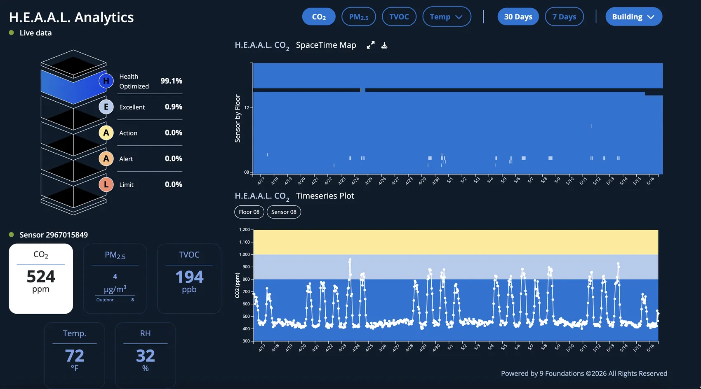

Small building decisions shape big data center outcomes.
Data centers are becoming one of the defining building challenges of the AI era. As demand grows, the operational and material choices inside data centers will shape energy use, equipment reliability, climate impacts, public health, and lifecycle costs. 9 Foundations — a leading healthy-buildings organization comprised of PhD-level experts — brings modeling, monitoring, and building science together to quantify those interconnections and turn building performance into measurable savings.
- 01Energy use
- 02Equipment reliability
- 03Climate impacts
- 04Public health
- 05Lifecycle costs
- $0T global data center investment this decade
- Up to 0× more energy intensive than typical commercial buildings
- 0GW global data center power demand expected by 2030
Map the portfolio, building by building.
9F scientists built a parameterized inventory of every existing and planned data center in Virginia — one of the world's densest data center hubs. Each of the 412 sites carries publicly-sourced building dimensions and a modeled HVAC profile that drive its energy, equipment, and air-quality outcomes.
Same parameterization runs against any market with public site data.
Select the right filters for your building.
Small filtration choices can create outsized economic consequences. FilterStudio quantifies which filters reduce energy use, equipment damages, climate damages, and public-health harms — against real building conditions, over time, not lab snapshots.
annual co-benefits from better filtration, modeled across the Virginia portfolio
The case study below shows how a single filter decision compounds — first at one building, then at portfolio scale.
- 0MWh/y
- $0M/year
- $0M/year
- $0k/year
Simulate before you build.
MATRIX models how HVAC setback decisions ripple into annual energy consumption and occupant comfort. The heatmap below shows percent-reduction sensitivity across an HVAC-shift × outdoor-temperature surface; hovering a cell tilts the same building's IEQ distribution to show what people experience at that operating point.
Reduction in Annual Energy Consumption
Range represents model sensitivity to baseline deadband
Watch the air. Score the building.
Real-time building data closes the gap between modeled performance and actual conditions, giving operators a low-cost way to verify air-quality and building-health outcomes in the field. Every metric matters twice — once for the equipment that needs stable operating conditions, once for the people in and around the building.

Turn building decisions into measurable savings.
We'll walk through how the Virginia inventory, FilterStudio, MATRIX, and H.E.A.A.L. apply to your sites — and what a modeled co-benefits analysis would look like for your portfolio.